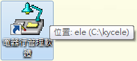
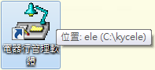
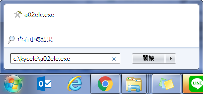

電腦重灌前或更換電腦的處理方式
請先備份資料。
系統預設在C:\KYCELE資料夾，請備份整個KYCELE資料夾。（若存放其他磁碟，請備份對應路徑）若不確定軟體存放路徑，可將滑鼠指向桌面電器行軟體圖示，電腦會顯示存放位置。

請先備份資料。
系統預設在C:\KYCELE資料夾，請備份整個KYCELE資料夾。（若存放其他磁碟，請備份對應路徑）若不確定軟體存放路徑，可將滑鼠指向桌面電器行軟體圖示，電腦會顯示存放位置。

KYCELE資料夾。請把備份的整個KYCELE資料夾複製，貼回C碟根目錄，並全部取代即可。
BACK1～BACK7資料夾，請先確認最後一天備份的時間是星期幾，如：最後一次備份是星期二，那最新資料就是在E:\BACK2資料夾。
C:\kycele\a02ele.exe)來檢查，因為不確定是那一天，所以必須把BACK1～BACK7每個資料夾都檢查過，資料最多的那份，就是最新資料。
C:\kycele\a02ele.exe後按下Enter鍵。

E:\BACK2），請把BACK2整個資料夾複製起來，貼到C:\KYCELE資料夾內。
C:\KYCELE\DATA整個資料夾刪除。
BACK2資料夾重新命名為DATA即可。